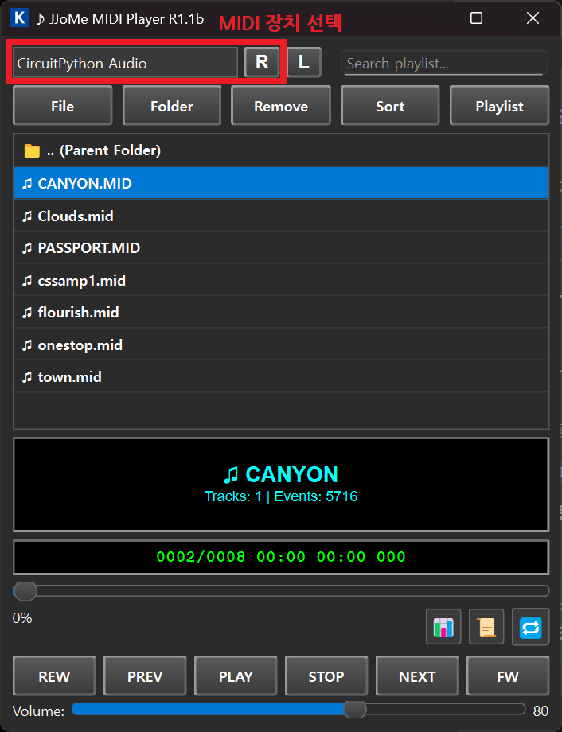
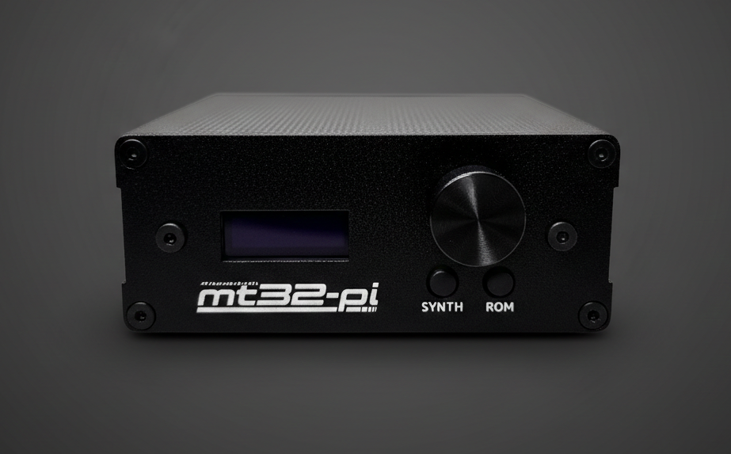

MT32-Pi 상세 매뉴얼
"조립 완료. 파이만 꽂으세요."
📦 프로젝트 개요
MT32-Pi는 Raspberry Pi Zero 2W의 강력한 성능을 활용하여 고전 Roland MT-32 미디 모듈을 Bare-metal(OS 없이 직접 구동) 방식으로 완벽하게 에뮬레이션하는 오픈소스 프로젝트입니다.
Plumkit의 MT32-Pi 키트는 이 복잡한 과정을 누구나 쉽게 마칠 수 있도록 최적화된 하드웨어 솔루션을 제공합니다.
🛠️ 준비물 및 사양
Raspberry Pi Zero 2WH (필수)
Zero 2W 모델 권장 (일반 Zero는 성능 부족으로 끊김 발생)
Zero 2W 모델 권장 (일반 Zero는 성능 부족으로 끊김 발생)
Micro SD 카드
FAT32 포맷, 8GB~32GB 권장
FAT32 포맷, 8GB~32GB 권장
5V 3A 이상 전원
저전력 어댑터 사용 시 노이즈나 재부팅이 발생할 수 있습니다.
저전력 어댑터 사용 시 노이즈나 재부팅이 발생할 수 있습니다.
1단계: Pi Zero 2WH 장착
해야 할 것
- Pi Zero 2WH → 메인보드 40핀에 수직으로 꾹
- 전열 시트 바닥 밀착 확인
- Micro SD 카드 삽입 → 케이스 닫기
⚠️ 주의: 핀 방향 확인 (어긋나면 불량의 원인이 됩니다)
2단계: 펌웨어 설치
파일 준비
- 여기서 펌웨어 다운로드
- 압축 해제 → SD 카드 최상위 폴더에 전체 복사
-
mt32-pi를 최대한 활용하려면 총 4개 이상의 ROM 파일 (구형/신형/CM-32L 제어 ROM, MT-32/CM-32L PCM ROM)이 필요합니다.파일 추가 (별도 준비)
※ 저작권 보호를 위해 ROM 파일은 직접 제공하지 않습니다.
원작자의 Wiki 설명을 참고하시거나, 이곳(구글 검색) 등을 통해 필요한 파일을 직접 구하여 같은 위치에 넣어주세요.
파일명 예시:pcm_mt32.rom,ctrl_mt32_2_04.rom,pcm_cm32l.rom,ctrl_cm32l_1_02.rom
완료 기준: SD 카드 roms폴더에 ctrl_xxx.rom, pcm_xxx.com 파일들이 보이면
OK
3단계: 연결
| 단자 | 연결 대상 | 규격 |
|---|---|---|
| DC 5V (후면) | 전원 어댑터 | 5V 3A 이상 필수 |
| USB-C (후면) | PC / 라즈베리파이 | 추가 파일 불필요 |
| AUX (후면) | 스피커 / 헤드폰 | 3.5mm |
※ DC 잭의 구조상 어댑터 단자가 절반 정도만 들어가는 것이 정상이니, 무리하게 깊게 넣지 마세요.
미디 플레이어 테스트 (JMPlayer)
MT32-Pi가 정상적으로 인식되고 소리가 나오는지 확인하는 과정입니다.
- JMPlayer 준비: 라즈겜동 네이버 카페에서 JMPlayer(JJoMe MIDI Player)를 다운로드하고 실행합니다.
- 출력 장치 설정: PC에 MT32-Pi를 연결 후 상단 메뉴의 CircuitPython Audio를 선택합니다.
- 파일 추가:
File또는Folder버튼을 눌러 테스트용 미디 파일(.mid) 또는 노래방 파일(.nob)을 불러옵니다.
(테스트용 파일이 없다면? Windows 기본 미디 샘플 다운로드) - 재생:
PLAY버튼을 눌러 스피커에서 소리가 나오는지 확인합니다. - 모니터링: 📊 아이콘(채널 모니터)을 누르면 현재 연주되는 채널, 악기, 볼륨 상태를 실시간으로 확인할 수 있습니다.

JMPlayer 실행 및 설정 화면
💡 팁: 소리가 나지 않는다면
MIDI 장치 선택 메뉴 옆의 R 버튼을 눌러 장치 목록을 갱신해
보세요.
🎹 사운드폰트(FluidSynth) 활용
MT32-Pi는 MT-32 뿐만 아니라 현대적인 고음질 사운드폰트(.sf2)를 재생할 수 있는 FluidSynth 모드를 지원합니다.
- SD 카드의
soundfonts폴더에.sf2파일을 복사하세요. - 모드 전환: 기기 전면의 SYNTH 버튼으로 MT-32 모드와 사운드폰트 모드를 실시간 전환합니다.
- 폰트 교체: 사운드폰트 모드에서 ROM 버튼을 눌러 여러 폰트를 순서대로 선택할 수 있습니다.

기기 전면: SYNTH(모드 전환) 및 ROM(폰트 교체) 버튼 위치
💡 추천 폰트: 화려한 오케스트라 사운드를 원하신다면
GeneralUser GS나 SC-55 스타일의 사운드폰트를 사용해 보세요.
🔍 꿀팁: SC-55 사운드폰트는 종류가 많습니다. 그 중 파일 용량이 약 103.4MB인 버전을 찾는 것이 가장
원음에 가깝고 퀄리티가 좋기로 유명하니 참고하세요!
[구글에서 SC-55 사운드폰트 찾기]
게임 설정
A. DOSBox (PC)
dosbox.conf 파일을 수정하세요.
[midi] mididevice = default midiconfig = (장치 관리자의 mt32-pi 번호)
게임 실행 → 사운드 설정 → Roland MT-32 선택
B. RetroPie
- 설정 → MIDI Output → USB MIDI
- ScummVM / DOSBox-Pure → MT-32 에뮬레이션 ON
⚠️ 문제 해결
| 증상 | 원인 | 해결 |
|---|---|---|
| 소리 끊김 | 전원 부족 | 5V 3A 이상 어댑터 사용 |
| 인식 안됨 | USB 불량 | 케이블 재연결 또는 교체 |
| 볼륨 조절 안됨 | 조작 미숙 | 로터리 인코더 회전 |
🎮 컨트롤
- 로터리 인코더 회전: 볼륨 조절
-
SYNTH 버튼: MT-32 ↔ 사운드폰트 전환
※ 반드시 음악 정지 후 눌러주세요. (재생 중 전환 시 음악 깨짐 발생)
- ROM 버튼: 사운드폰트 교체